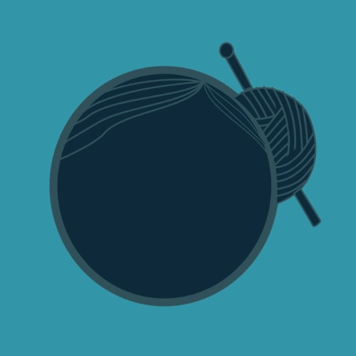
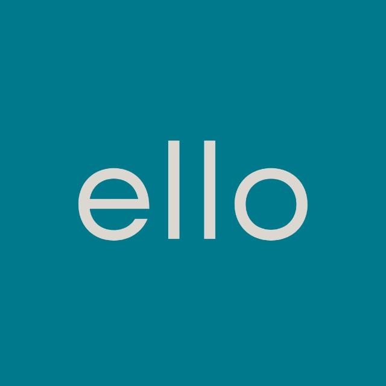

Formulário 01
Teste e avaliação do aplicativo
Baixe o Ello, teste as funções e depois conte como foi a sua experiência com o aplicativo.
Responder como aluno testador
Projeto de TCCUm aplicativo para organizar o cuidado de pessoas idosas.
O Ello é um aplicativo criado para ajudar na organização do cuidado de pessoas idosas. Ele reúne informações importantes da rotina em um só lugar.
Escolha abaixo o acesso que você procura. Nos formulários, confira o público indicado antes de responder.
Cada formulário é destinado a um público diferente. Use a indicação em destaque para escolher corretamente.
Formulário 01
Baixe o Ello, teste as funções e depois conte como foi a sua experiência com o aplicativo.
Responder como aluno testadorFormulário 02
Compartilhe sua visão acadêmica ou profissional sobre o aplicativo e a proposta do projeto.
Responder como estudante ou profissionalO projeto foi desenvolvido para facilitar o registro e a consulta de informações relacionadas à pessoa idosa. A proposta é apoiar familiares e cuidadores no dia a dia, com uma experiência direta e fácil de entender.
O aplicativo foi desenvolvido em Flutter e conta com uma API em Node.js.
Registros organizados para facilitar o acompanhamento cotidiano.
Acompanhamento de glicemia, refeições, insumos e outras informações importantes.
Uma visão mais clara para quem participa da rede de cuidado da pessoa idosa.

O Ello busca reduzir a dificuldade de organizar informações e tornar a rotina de quem cuida mais prática.